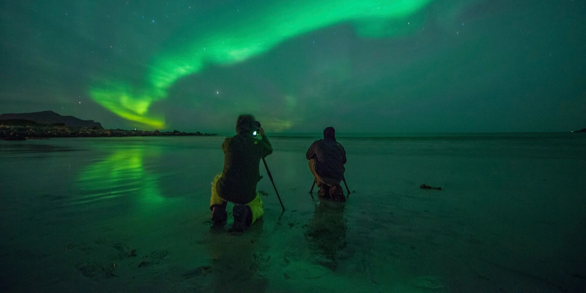

Hey There.
Intro(:)
i'am an aspiring student studying computer science, passionately delving into web development. With a knack for coding, a keen eye for design, and an active engagement in the tech community,shaping the digital community.
My skills
Photography..
Avid amateur photographer with a keen eye for detail and a passion for capturing compelling moments. Demonstrates creativity, patience, and attention to detail through the pursuit of various photography genres, including landscape, portrait, and macro photography. Completed , further honing technical and artistic skills. Developed and executed personal photography projects, showcasing the ability to plan, organize, and deliver high-quality visual content.
Gaming..

Proficient in conceptualizing and developing creative game ideas, demonstrating a strong imagination and storytelling ability. Knowledgeable about player psychology and the importance of crafting engaging and immersive experiences for diverse audiences. Proficient in using game development tools, such as Unity or Unreal Engine, to bring design concepts to life.